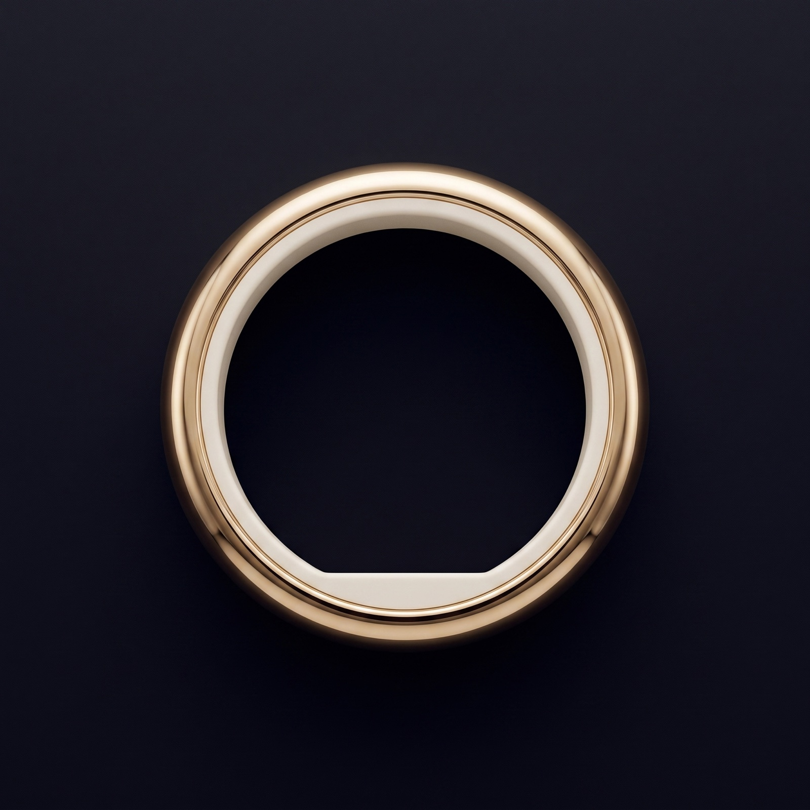
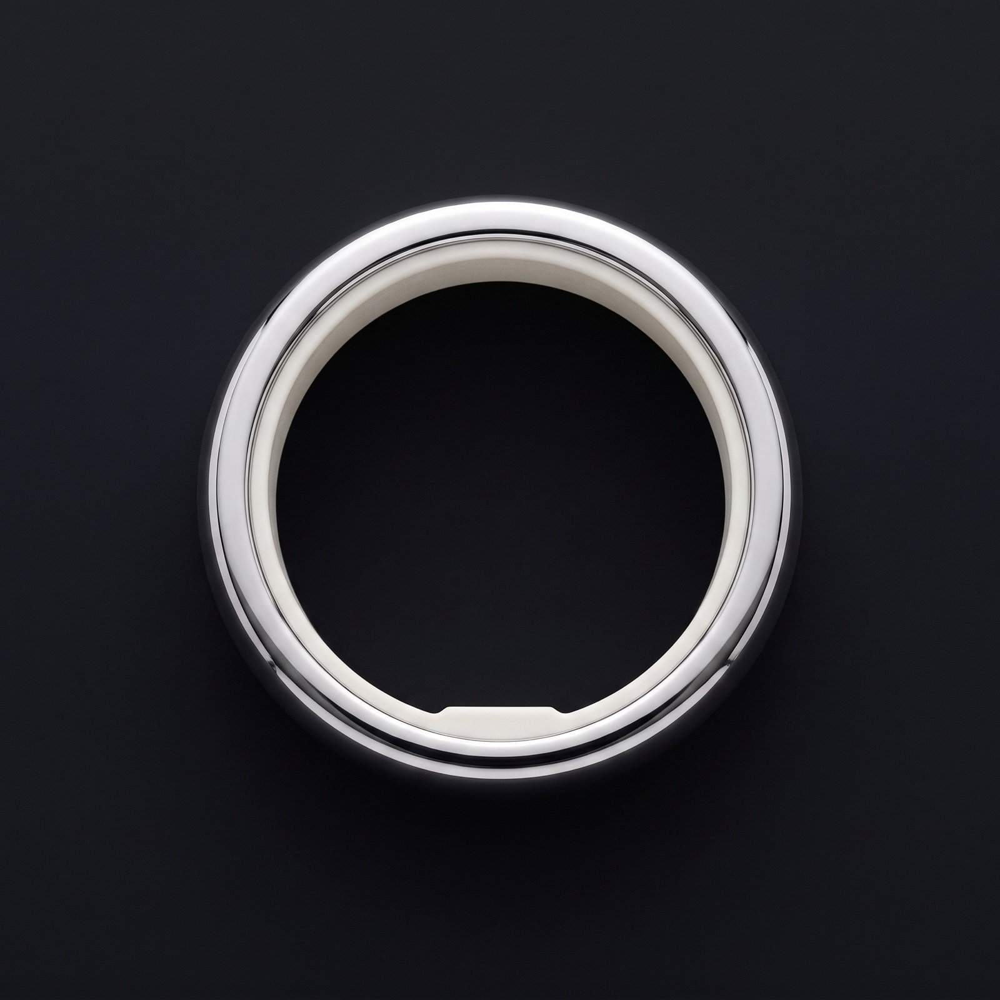
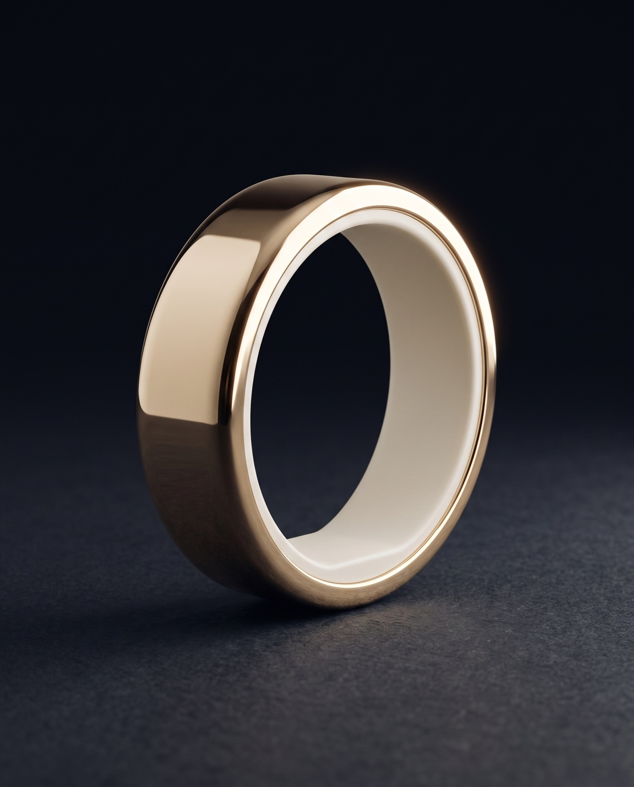
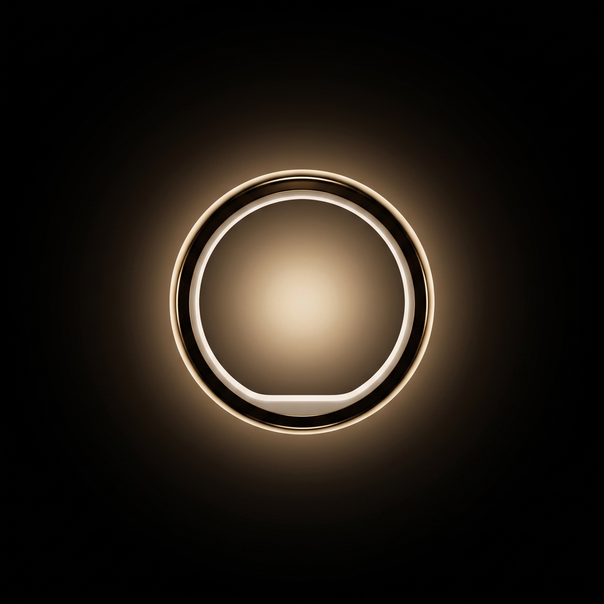
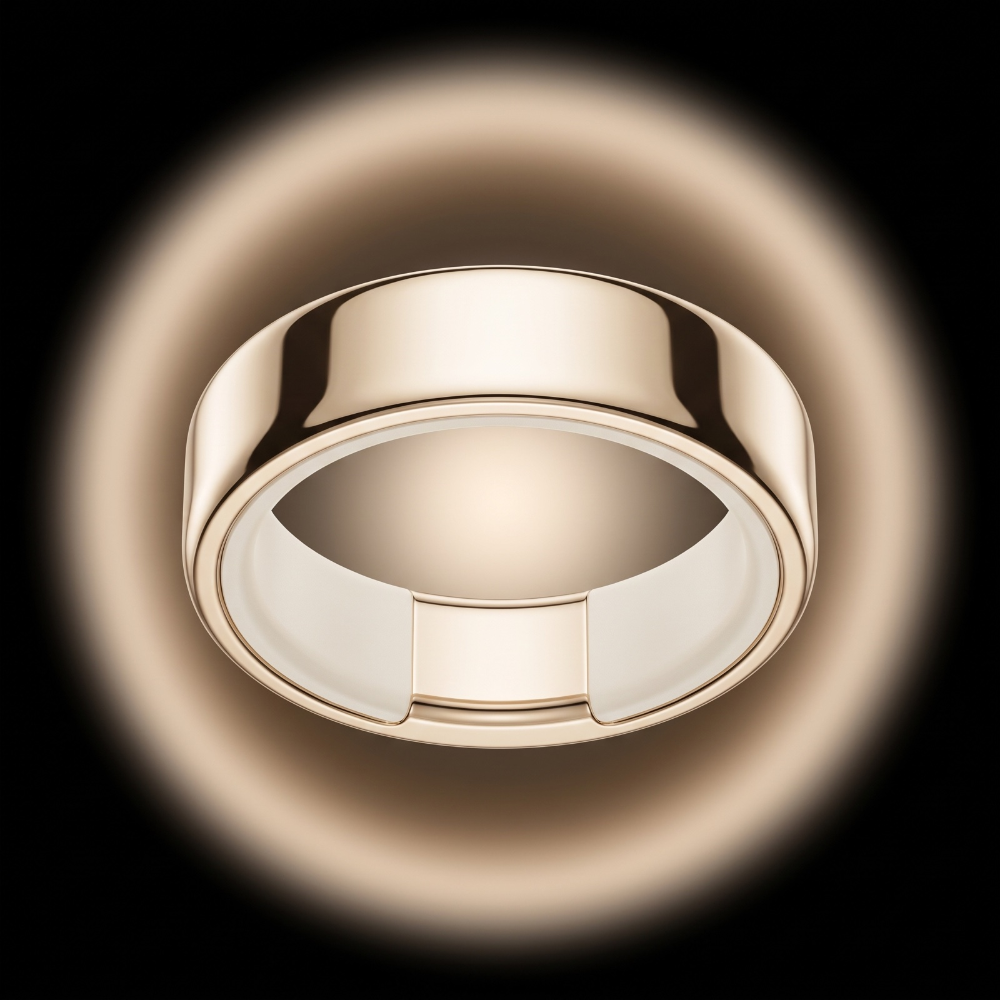

The Pulse ring & the Pulse ripple.
One character, rendered identically everywhere. This is the standard every still, film, and render must follow — the object's exact anatomy (now including the motor flat-spot), and the rules for the one branded ripple.
1 · The ring
exact anatomyA wide, low-profile mirror-polished band with a matte ivory-white inner sleeve. The signature the samples were missing: the inner sleeve is not a perfect circle — it has one small flat straight segment where the vibration motor sits. Visible any time you can see into the opening.



- Band
- Wide, low-profile, wider than it is thick. Softly rounded edges, gently curved outer wall — never a bulbous dome.
- Outer surface
- One continuous flawless mirror-polished metal. No window, screen, seam, logo, or button.
- Inner sleeve
- Matte ivory-white, at the inner edge only. One flat segment (motor). Never a perfect circle.
- Colorways
- Champagne gold Silver / platinum
- Lighting
- The ring is a solid object. It never glows or lights from the inside.
- Never
- Thin band · fat dome · dark inset/screen · sensor nub · perfectly round inner sleeve · interior glow.
2 · The pulse — glow, then coplanar ripple
from the ring's edge, in its planeAfter exploring concentric rings, caustics, and scene-warps (all retired), the pulse resolved into one motion: a soft warm glow at the ring that diffuses and ripples outward. Crucially, the ripple is coplanar with the ring — it spreads out from the ring's own outer edge and sides, in the ring's plane, like rings on still water — with one singular, slightly brighter highlight ring hugging the ring, then softer waves beyond.




3 · The Pulse pulse — the rule
the ruleAlways
- Show the ring worn on a hand — never floating alone or staged as bare product when the pulse appears
- Radiate coplanar with the ring — out from its outer edge / sides, in the ring's own plane
- Carry one singular, slightly brighter highlight ring nearest the ring, then softer ripples outward
- Be centered and symmetric: glow → diffuse → soft wavy ripple, as one motion
- Warm gold → soft cream (#D9B45E core, fading to warm light)
- Soft, translucent, dreamy — diffuse edges; in motion, a slow breath, never a strobe
Never
- Pulse from a bare, unworn ring — the pulse is a felt, human moment, so the ring is on a hand
- Sit on a separate plane from the ring (e.g. ripples on the floor below a standing ring)
- Hard concentric rings or water caustics — both retired
- Off-center, asymmetric, or spreading only to one side
- Glow or emit from inside the ring — the band is never a light source
- Cool, blue, neon, harsh, or a beam/point — it is warm, soft, and a wave
One pulse, everywhere
The glow → diffuse → ripple pulse is the single Pulse motion, centered on the ring, in every context — product, lifestyle, and UI. The Pulse Language states (double, wide, tight, two-meeting) are all variations of this one motion — the structure never changes, only its rhythm and reach.
Pulse = glow → diffuse → ripple, centered on the ring. Concentric rings and caustics retired. Ring = wide low-profile band, mirror polish, ivory sleeve with the flat motor-spot, never lit from inside. All pulse assets re-rendered to this standard.